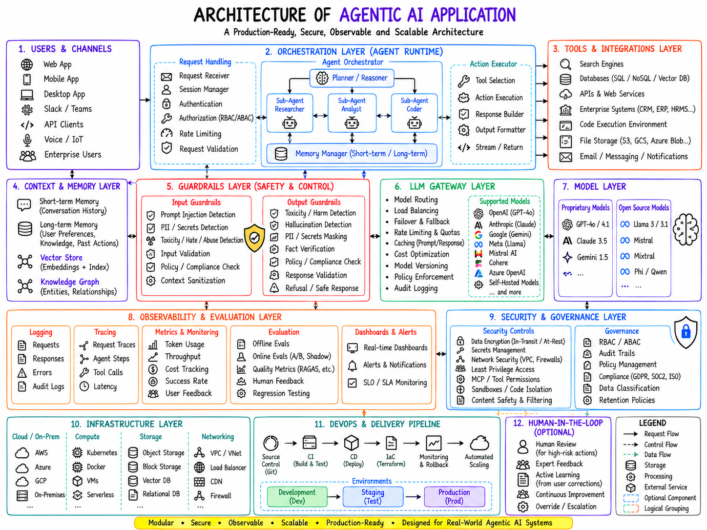

1.1 What this document is
This is an engineering design document for a production-grade Agentic AI application: a system in which large language models do not merely answer questions but pursue goals by planning, calling tools, keeping memory, collaborating with other agents and operating under explicit safety and governance controls.
The document is organised around the twelve-layer reference architecture shown above. Every layer is treated the same way: why it exists, what its components are, how the components talk to each other, which technologies fit, how to build it, and where it fails in practice. Code examples in code-examples/ and Mermaid sources in diagrams/ are part of the deliverable and are referenced throughout.
The intended reader is a software or AI engineer who has to ship this system, an architect who has to review it, or a platform team that has to operate it. It is not a tutorial on prompting; it assumes familiarity with HTTP services, containers and at least one LLM API.
1.2 What Agentic AI is
An agent is a program that uses an LLM as its decision-making core to achieve a goal through a sequence of observations and actions. The distinguishing property is control: in a conventional LLM application the developer decides the control flow at design time; in an agentic application the model decides, at run time, which step to take next, which tool to call, whether the goal has been reached and whether to ask a human.
Three ingredients make this possible:
- Reasoning. The model produces intermediate thoughts, plans or critiques rather than a single-shot answer.
- Actions. The model emits structured tool calls (function calling) that the runtime executes against real systems: search engines, databases, code sandboxes, enterprise APIs.
- Feedback. The results of those actions are fed back to the model so it can adapt. The loop think, act, observe repeats until the task is done or a budget is exhausted.
Everything else in the architecture exists to make that loop safe, fast, cheap, observable and reproducible at enterprise scale.
1.3 Three generations of LLM applications
| Dimension | Traditional LLM app | RAG system | Agentic AI system |
|---|---|---|---|
| Control flow | Fixed by developer | Fixed (retrieve, then generate) | Decided by the model at run time |
| Knowledge | Parametric only | Parametric + retrieved documents | Parametric + retrieved + tool results + memory |
| Actions | None | Read-only retrieval | Read and write actions on external systems |
| Number of model calls | One | One to two | Many, often tens, sometimes hundreds |
| State | Stateless or chat history | Stateless | Short-term, long-term, shared agent state |
| Failure modes | Hallucination | Hallucination, poor retrieval | Above plus runaway loops, unsafe actions, cost blow-ups, injection through tool output |
| Typical latency | Sub-second to seconds | Seconds | Seconds to minutes |
| Observability need | Prompt and response | Plus retrieval quality | Full trace of plans, tool calls, sub-agents and cost |
RAG remains a component of agentic systems (Section Memory System); it stops being the whole system.
1.4 Why an agent-based architecture is required
Many enterprise tasks cannot be expressed as one prompt:
- "Analyse our three main competitors and prepare a board-level report" needs search, document reading, numeric comparison, chart generation and writing, in an order that depends on what is found.
- "Resolve this support ticket" needs the CRM, the order system, a policy document, and possibly a refund action that must be approved.
- "Migrate this service to the new SDK" needs code reading, editing, test execution and iteration on failures.
Each of these is a goal with an unknown path. Encoding every path by hand is brittle; letting a single prompt improvise with no structure is unsafe. The agent runtime sits between those extremes: the model chooses the path, the architecture constrains and observes it.
1.5 Characteristics of a production-grade agentic system
The diagram's subtitle, modular, secure, observable, scalable, translates into eight properties that recur through this document.
| Characteristic | What it means in practice | Provided by |
|---|---|---|
| Autonomous reasoning | The model reasons over intermediate state (ReAct, reflection) rather than answering in one shot | Layer 2: Planner / Reasoner |
| Planning | Goals are decomposed into tasks with dependencies and acceptance criteria before execution | Layer 2: Planner |
| Tool usage | Actions are typed function calls, validated, permission-checked and executed outside the model | Layers 2 and 3 |
| Memory | Conversation, task state, user knowledge and documents are stored and retrieved deliberately | Layer 4 |
| Multi-agent collaboration | Specialist agents share state and are coordinated by an orchestrator | Layer 2 |
| Safety | Inputs and outputs pass through guardrails; risky actions require human approval | Layers 5, 9, 12 |
| Observability | Every plan, step, tool call, token and cost is traced, measured and evaluated | Layer 8 |
| Scalability | Stateless services, queue-backed workers, gateway-level routing, horizontal scaling on Kubernetes | Layers 6, 10, 11 |
1.6 The reference architecture at a glance
The diagram groups the system into twelve numbered layers. Reading it left to right and top to bottom:
| # | Layer | Role in one sentence | Chapter |
|---|---|---|---|
| 1 | Users & Channels | Every surface through which a request enters: web, mobile, desktop, Slack/Teams, API clients, voice/IoT, enterprise users | Architecture Overview |
| 2 | Orchestration Layer (Agent Runtime) | Request handling, the agent orchestrator with planner and sub-agents, the memory manager and the action executor | Agent Runtime |
| 3 | Tools & Integrations | Search, databases, APIs, enterprise systems, code sandboxes, file storage, messaging | Tools & Integrations |
| 4 | Context & Memory | Short-term and long-term memory, vector store, knowledge graph | Memory System |
| 5 | Guardrails | Input and output safety and policy controls | Guardrails |
| 6 | LLM Gateway | Routing, load balancing, failover, quotas, caching, cost, versioning, audit | LLM Gateway & Models |
| 7 | Model Layer | Proprietary and open-source models, hosted or self-hosted | LLM Gateway & Models |
| 8 | Observability & Evaluation | Logging, tracing, metrics, evaluation, dashboards and alerts | Observability |
| 9 | Security & Governance | Encryption, secrets, network, least privilege, sandboxing, RBAC/ABAC, audit, compliance, retention | Security & Governance |
| 10 | Infrastructure | Cloud or on-premises compute, storage and networking | Deployment |
| 11 | DevOps & Delivery Pipeline | Source control, CI, CD, IaC, monitoring, rollback, environments | Deployment |
| 12 | Human-in-the-Loop (optional) | Review, feedback, active learning, override | Human-in-the-Loop |
The arrows in the diagram encode four distinct flows and the legend distinguishes them:
- Request flow (solid): user request into the orchestrator, out to tools and models, back to the user.
- Control flow (dashed): the orchestrator directing sub-agents, guardrails vetoing steps, the gateway choosing models.
- Data flow (dashed green): memory reads and writes, telemetry emitted to observability.
- Feedback: observability and human review feeding datasets, prompts and policies back into development.
Layers 8 to 12 are horizontal concerns: every other layer emits telemetry to Layer 8, is governed by Layer 9, runs on Layer 10, is delivered by Layer 11 and may defer to Layer 12.
1.7 How to read this documentation
Each chapter follows a fixed structure so it can be used as a checklist as well as a narrative:
- Overview – purpose, responsibilities and position in the architecture.
- Architecture – internal components, data flow, communication and dependencies, with diagrams.
- Implementation guide – how to build it, technology options with trade-offs, configuration, production considerations.
- Example implementation – code, API and configuration excerpts.
- Best practices – common mistakes, optimisation and security recommendations.
The Reference Implementation chapter assembles a concrete stack, walks an end-to-end use case through every layer, lists production challenges with their solutions and closes with the technology map, roadmap and deployment checklist.